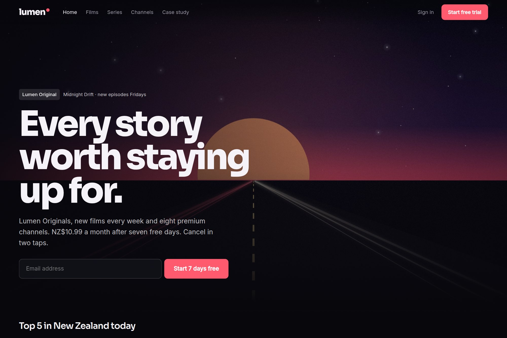

12 — Streaming platform
A streaming homepage that serves discovery and sign-up.
A cinematic entertainment hub concept where browsing depth and a single sign-up route stop competing.

- Type
- Concept · self-directed
- Discipline
- Web · UI · Product
- Deliverables
- UI system, motion tokens, content grid
- Duration
- 6 weeks
01The brief
Streaming homepages have to serve content discovery and sign-up at once, and the two normally compete for the same region of the screen.
The concept blends premium discovery with a focused sign-up path, so neither is buried by the other.
02Design decisions
- A single bold hero statement with one action, placed ahead of the content wall.
- A poster grid sized for browsing depth rather than editorial promotion slots.
- Motion tokens and a content grid delivered alongside the UI system, so the wall stays consistent as the catalogue grows.
03Outcome
A cinematic homepage concept delivered in six weeks as a UI system, motion tokens and content grid, with the sign-up path kept to a single route.
6 wksConcept to UI systemIncluding motion tokens and content grid.
1Sign-up routeOne action, ahead of the wall.
3Delivered systemsUI, motion, content grid.
A concept project designed in-house by Yonder Tech, not a client engagement. Figures describe the delivered design system, not commercial results.